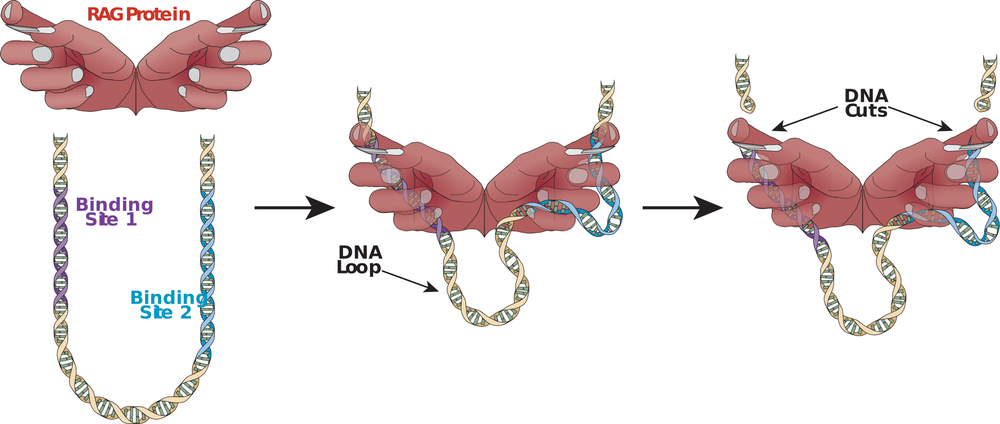

Griffin Chure and Soichi Hirokawa
Division of Biology and Biological Engineering and Department of Applied Physics,
California Institute of Technology, Pasadena, CA, USA
One of the most fascinating features of the immune system in humans is not
only its ability to produce a vast array of antibody types to identify any
invasive bacterium or virus-infected cell, but also the elegance of making
antibody assembly by cutting and joining different regions of DNA. The
initial cutting part of this process involves a protein called RAG, as
anthropomorphized into hands in the figure, grabbing onto two regions of the
DNA to form a DNA loop, shown with purple and blue backbones, each adjacent
to antibody-encoding sequences selected for joining. RAG attaches to these
two regions because they exhibit certain sequence patterns that are amenable
for binding. RAG cuts the DNA between these sites and the antibody-encoding
portions before other proteins complete the DNA joining phase for cells to
make antibodies.
While RAG binds and cuts specific regions of the DNA because of the
recognizable sequence patterns, these sites can still vary in sequence within
the genome. In a study that we recently published in Nucleic Acids Research,
we examined the extent to which RAG will bind and cut the DNA if we modify a
binding site sequence at multiple positions and compared the contributions of
each nucleotide modification to the collective effect. We illustrate some of
our findings in this visual, which is modified from a page in the
Supplementary website that accompanies our publication. In this interactive
visual, we show three example comparisons between effects of several single
nucleotide changes from some starting sequence and that of combining these
replacements into a single sequence. Through the dropdown menu, one can
select any of these three binding site sequences to reveal the effects of the
sequence and the individual effects of its constitutive changes. The upper
left plot shows the frequency that RAG creates a DNA loop for the combination
of changes to the far right and the individual changes to the left, with
position along the sequence where the change was made as the x-axis. The plot
on the upper right shows full posterior distributions of the probability that
RAG cuts the DNA with the altered sequence. In the bottom row, we present
three cumulative distribution functions to show (from left to right) how much
time it takes before DNA unloops without cutting, is cut, or a compilation of
the two possible fates. To more easily compare one particular single
nucleotide change against the combined changes, hovering the mouse over a
colored nucleotide in the sequence below the dropdown menu will send the rest
of the data into the background and present only the individual change with
the superposition of changes.
Some nucleotides can have a dominating influence on how well RAG binds or
cuts the DNA. For the sequence called V8-18, the change from T to A at
position six prevents RAG from binding these sites. Antibody-encoding DNA
segments neighboring binding sites with this T-to-A change are rarely
selected, which presents significant obstacles to making the antibody
necessary for fighting off some infections.

{%include_relative point_endogenous_comparison.html %}
This visualization was made using the Bokeh ploting library. The Python and Javascript code along with the necessary datasets can be found at the associated GitHub Repository.